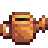
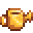
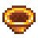
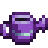
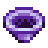

Blacksmith
| Blacksmith | |
 | |
| Open Hours: | 9:00am to 4:00pm |
| Closed: | Friday, after Community Center restored and at 10:30 AM Winter 16 |
| Address: | Across the town's river, to the bottom right |
| Occupants: | |
- This article is about the store and building. For the profession, see Mining#Mining Skill.
Clint's Blacksmith shop provides multiple services primarily related to resources found in the Mines. It chiefly serves as a location for upgrading tools, and breaking open geodes, although he also trades in Coal and ores (copper, iron, & gold). Finally, the building is also Clint's home, and his bedroom is out the back of the shop floor.
Stock
The purchase prices of ore and coal increase in Years 2+. The player will receive a letter in the mail on Spring 1 of Year 2 saying "Notice: The price of raw materials at Robin's shop and Clint's shop has increased." The gold obtained by selling items to Clint (or through the shipping bin) does not increase.
| Item | Name | Description | Year 1 Price |
Year 2+ Price |
|---|---|---|---|---|
| Copper Ore | A common ore that can be smelted into bars. | |||
| Iron Ore | A fairly common ore that can be smelted into bars. | |||
| Coal | A combustible rock that is useful for crafting and smelting. | |||
| Gold Ore | A precious ore that can be smelted into bars. |
Selling
Similar to how it is possible to sell crops directly to Pierre, it is also possible to sell gems, minerals, ore, and bars directly to Clint. Note that Clint will not directly buy any kind of geodes (although it is possible to sell any ores they contain back to him).
Upgrade Tools
Clint can upgrade the four main tools and the inventory Trash Can. Each quality-upgrade must be completed in sequence and a quality-upgrade cannot be skipped. (If a tool is at the copper quality, it can't be upgraded to gold quality until the steel upgrade is completed.) It takes 2 days to upgrade a tool. Other Blacksmith services are still available while Clint is upgrading a tool. A notification will pop up on the bottom left side of the screen on the morning a tool upgrade is ready.
When the Blacksmith's shop is closed for festival days (although the door will not be shut for the Dance of the Moonlight Jellies in the Summer, and the Spirit's Eve festival in the Fall), Clint will still work on tools. If a player drops off a tool the day before a festival, it will be ready the day after the festival as normal. However, if a player drops off a tool 2 days before a festival and the Blacksmith's shop is closed due to the festival, the player will be unable to pick up the tool and must wait an additional day.
All Axe and Pickaxe upgrades reduce the number of hits necessary to remove trees and rocks. In addition, higher level tools can break larger objects of their respective type (logs and stumps for Axes, boulders and meteorites for Pickaxes). Upgraded versions of the Watering Can and Hoe allow the player to water and till multiple squares of land in a single use (using click-and-hold). Upgrading the Watering Can also refills it. The trash can upgrades increase the auto-sell value of any objects placed into them up to 60%.
| Image | Name | Ingredient | Cost |
|---|---|---|---|
 |
Copper Tool | ||
| Steel Tool | |||
  |
Gold Tool | ||
  |
Iridium Tool |
| Image | Name | Ingredient | Cost |
|---|---|---|---|
| Copper Trash Can | |||
| Steel Trash Can | |||
| Gold Trash Can | |||
| Iridium Trash Can |
Process Geodes
Clint can break open geodes for  25g. Gems and Minerals can be found within, as well as common resources like Stone, Clay, and Coal.
25g. Gems and Minerals can be found within, as well as common resources like Stone, Clay, and Coal.
If the sell price of the item inside the geode is  75g or less, a "clink" sound will be heard when it is broken open. Otherwise a short melody will be heard and the item will sparkle.
75g or less, a "clink" sound will be heard when it is broken open. Otherwise a short melody will be heard and the item will sparkle.
Artifact Troves can be purchased from the Desert Trader for 5 Omni Geodes. Clint will break these open like a geode, but instead of minerals, artifacts or treasures can be found inside.
| Image | Name | Description | Cost to Process |
|---|---|---|---|
| Geode | A blacksmith can break this open for you. | ||
| Frozen Geode | A blacksmith can break this open for you. | ||
| Magma Geode | A blacksmith can break this open for you. | ||
| Omni Geode | A blacksmith can break this open for you. These geodes contain a wide variety of minerals. | ||
| Artifact Trove | A blacksmith can open this for you. These troves often contain ancient relics and curiosities. | ||
| Golden Coconut | This is one tough nut to crack, but a professional might be able to break it open. | ||
| Mystery Box | A blacksmith can open this for you. Who knows what might be inside? | ||
| Golden Mystery Box | A blacksmith can open this for you. Who knows what might be inside? |
Tips
- To avoid missing a day of watering, water crops, then upgrade the Watering Can when the weather report indicates rain the next day. Crops will be watered the day the can is taken to the Blacksmith, the following day by the rain, and the Watering Can can be picked up the day after that. It can also be a good idea to upgrade the watering can near the end of a season if there is nothing in the ground that will bear fruit until then.
- Regarding coal prices, during year 1, it's cheaper to buy wood from the Carpenter's Shop and use a Charcoal Kiln to make coal than it is to buy coal from the Blacksmith's. Conversely, starting in year 2, the price of wood increases from
 10g to 50g, so it is cheaper to purchase coal.
10g to 50g, so it is cheaper to purchase coal. - At Mining Skill 7, it is cheaper to purchase Iron Ore, smelt Iron Bars, and use the Transmute (Au) recipe to create Gold Bars than it is to purchase Gold Ore and smelt it into Gold Bars.
- Although the door to the Blacksmith locks at 4pm, as long as the player is inside the building they can still interact with the counter after 4pm to make purchases, upgrade tools etc., even after Clint walks away from the counter at 5pm.
External Links
Users with access to their saved game files may find the "Stardew Predictor" utility helpful for predicting which items will be produced from breaking open geodes. The utility is located at: https://mouseypounds.github.io/stardew-predictor/
Gallery
Interior
History
- 1.04:
- Price of Copper Ore increased from 50g to 75g.
- Price of Iron Ore increased from 100g to 150g.
- Price of Coal increased from 100g to 150g.
- Price of Gold Ore increased from 300g to 400g.
- Price of Copper Ore increased from
- 1.3.27:
- Price of Copper Ore increases in Year 2+ from 75g to 150g.
- Price of Iron Ore increases in Year 2+ from 150g to 250g.
- Price of Coal increases in Year 2+ from 150g to 250g.
- Price of Gold Ore increases in Year 2+ from 400g to 750g.
- Price of Copper Ore increases in Year 2+ from
- 1.4: Added popup notification when upgraded tools are ready. Added Artifact Troves.
- 1.5: Added Golden Coconuts.
- 1.6: Added Mystery Boxes and Golden Mystery Boxes.
- A Gold and Copper Node have been added to the right of the door on a shelf, as a decoration.
- Added steel, gold, and iridium pans.
- 1.6.3: Blacksmith services are now available while a tool is being upgraded.
- 1.6.9: Watering Cans are automatically refilled when upgraded.
| Buildings | ||
|---|---|---|
| Merchants | Abandoned House • Adventurer's Guild • Blacksmith • Bookseller • Carpenter's Shop • Casino • Desert Trader • Fish Shop • Giant Stump • Harvey's Clinic • Ice Cream Stand • Island Trader • JojaMart • Marnie's Ranch • Oasis • Pierre's General Store • Qi's Walnut Room • The Stardrop Saloon • Traveling Cart • Volcano Dwarf • Wizard's Tower | |
| Houses | 1 River Road • 2 River Road • 1 Willow Lane • 2 Willow Lane • 24 Mountain Road • Elliott's Cabin • Farmhouse • Island Farmhouse • Leah's Cottage • Mayor's Manor • Tent • Trailer • Treehouse | |
| Farm Buildings | Farming | Barn • Cabin • Coop • Fish Pond • Greenhouse • Mill • Pet Bowl • Shed • Silo • Slime Hutch • Stable • Well |
| Special | Desert Obelisk • Earth Obelisk • Farm Obelisk • Gold Clock • Island Obelisk • Junimo Hut • Water Obelisk | |
| Other Buildings | Community Center • Dog Pen • Island Field Office • Joja Warehouse • Movie Theater • Museum • Spa • Witch's Hut | |